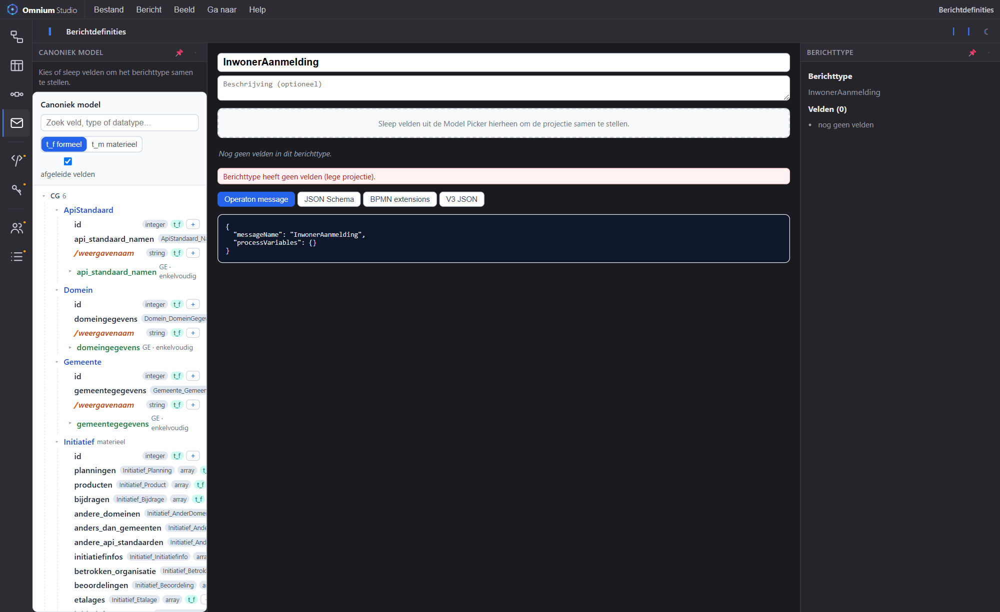

De applicatie-laag beschrijft de koppelvlakken: berichten, API's en de afdwinging van autorisatie. Allemaal afgeleid van het canonieke model, zodat contracten nooit losraken van de structuur eronder.
Een koppelvlak is een selectie over het canonieke model. Wijzigt het model, dan wijzigt het contract mee — geen handmatig nabouwen van schema's.
De koppelvlakken van deze laag: OpenAPI 3.1 (concept), een dynamische GraphQL-laag uit de MetaRegistry, en op termijn gRPC.
Berichttypen zijn de payload-contracten achter BPMN-messages; ze horen bij de business-laag en worden hier als koppelvlak ontsloten.
PAP, PIP, PDP en PEP dwingen het toegangsbeleid af op de koppelvlakken — gedacht in commando's en queries (CQRS), niet in CRUD.
Velden in koppelvlakken verwijzen naar entiteiten en gegevenselementen uit het canonieke model.
De applicatie-laag is de scharnier: ze vertaalt processtappen naar uitwisselbare contracten en bevraagt de data-laag bitemporeel:

Open de connectiviteit-activiteit en zie hoe contracten uit het model ontstaan.
Open Omnium Studio →